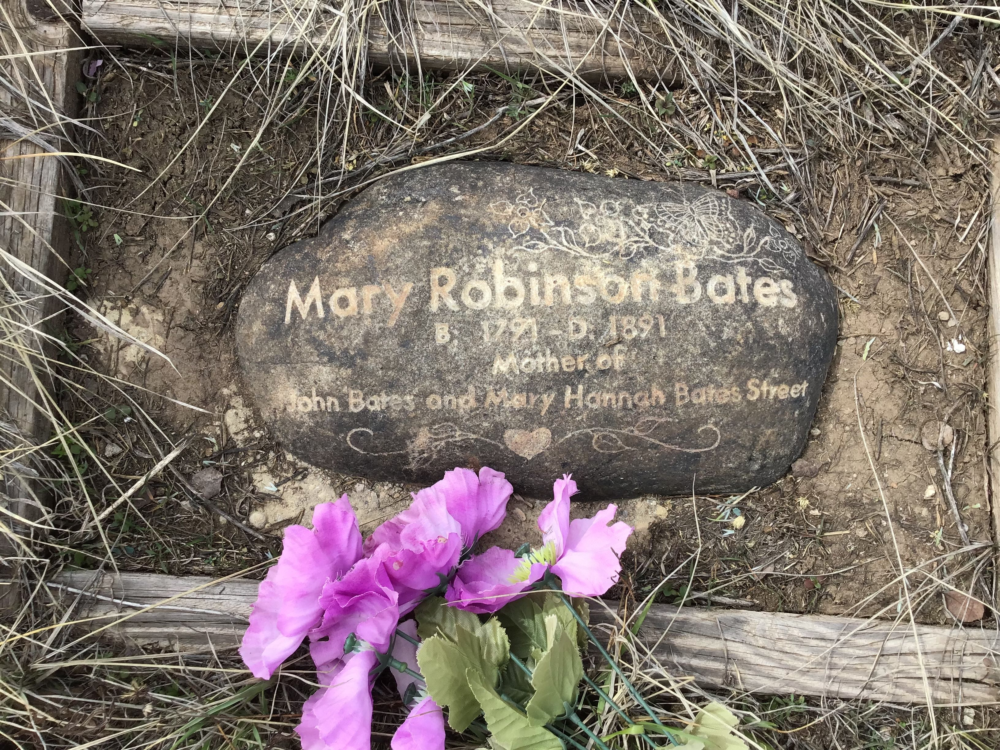
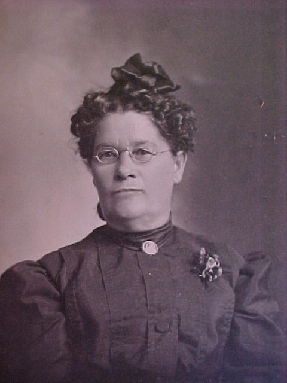
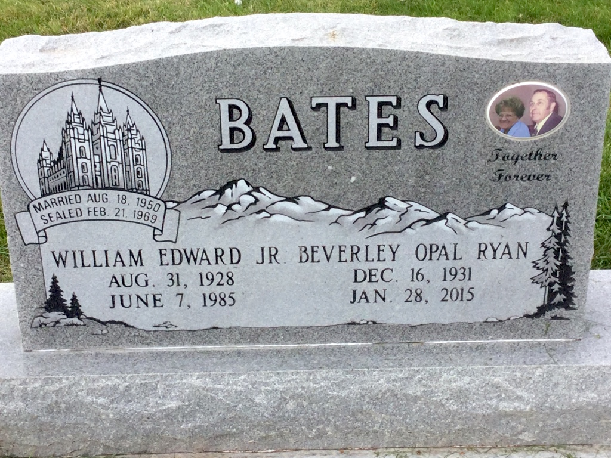
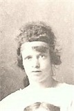
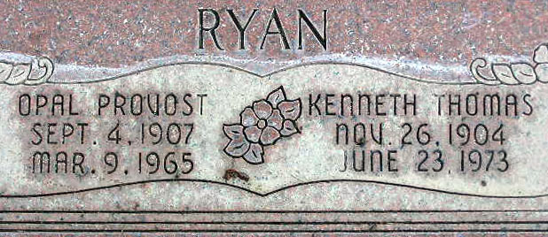

1791 – 1891

Mary Robinson Bates
née Robinson · m. William Bates
Mother of John Bates (1816) and 5th great-grandmother of Cliff. Born in Burton-Upon-Trent, England; died in Nibley, Cache County, Utah. Buried at Wanship Pioneer Cemetery, Summit County, Utah.
1816 – 1887
John Bates
m. Hannah Draycott
Father of John Bates (1842) and 4th great-grandfather of Cliff. Buried at Park City Cemetery, Park City, Utah.
1816 – 1863
Hannah Draycott Bates
née Draycott · m. John Bates
Mother of John Bates (1842) and 4th great-grandmother of Cliff. Buried at Wanship Pioneer Cemetery, Summit County, Utah.
1842 – 1917
John Bates
m. Lusina Angeline Keller
Father of Hiram Daniel Bates and 3rd great-grandfather of Cliff. Buried at Park City Cemetery, Park City, Utah.
1848 – 1911

Lusina Angeline Keller Bates
née Keller · m. John Bates
Mother of Hiram Daniel Bates and 3rd great-grandmother of Cliff. Buried at Kamas Cemetery, Summit County, Utah.
1928 – 1985

William Edward Bates, Jr.
Aug 31, 1928, Park City, UT · d. Jun 7, 1985, Salt Lake City
Beloved husband, father, and grandfather. U.S. Army veteran of the
Korean War. A glazier by trade and a Scoutmaster in the LDS Church.
Married Beverly Opal Ryan Aug 18, 1950, in Midway, Utah.
Buried at Midway City Cemetery, Midway, Utah.
1906 – 1955
William Edward Bates, Sr.
m. Mary Lacy Yates
Patriarch of the Utah Bates line; father of William Edward Bates, Jr. Buried at Park City Cemetery, Park City, Utah.
1871 – 1940
Hiram Daniel Bates
m. Bertha Kinsey
Father of William Edward Bates, Sr. and 2nd great-grandfather of Cliff. Buried at Park City Cemetery, Park City, Utah.
1871 – 1948
Bertha Kinsey Bates
née Kinsey · m. Hiram Daniel Bates
Mother of William Edward Bates, Sr. and 2nd great-grandmother of Cliff. Buried at Park City Cemetery, Park City, Utah.
1900 – 1970

Mary Lacy Yates Bates
née Yates
Mother of William Edward Bates, Jr. and matriarch of the family's Utah roots. Buried at Park City Cemetery, Park City, Utah.
1931 – 2015
Beverly Opal Ryan Bates
née Ryan · m. William Edward Bates, Jr., 1950
Wife of William Edward Bates, Jr. and mother to five sons. Daughter of Kenneth Thomas Ryan and Opal Lavon Provost Ryan. Buried at Midway City Cemetery, Midway, Utah.
1904 – 1973

Kenneth Thomas Ryan
m. Opal Lavon Provost
Father of Beverly Opal Ryan Bates; patriarch of the Ryan branch of the family. Buried at Midway City Cemetery, Midway, Utah.
1907 – 1965
Opal Lavon Provost Ryan
née Provost · m. Kenneth Thomas Ryan
Mother of Beverly Opal Ryan Bates. Buried at Midway City Cemetery, Midway, Utah.
1929 – 1999
Richard K. Ryan
brother of Beverly Opal Ryan
Sibling in the Ryan family of Utah.
1937 – 1973
Marvin K. Ryan
brother of Beverly Opal Ryan
Sibling in the Ryan family of Utah.
1944 – 1996
Gary R. Ryan
brother of Beverly Opal Ryan
Sibling in the Ryan family of Utah.
1934 – 2013
Keith W. Bates
brother of William Edward Bates, Jr.
Lived in West Valley City, Utah.
1930 – 2002
Marilyn Lacy Bates Ivie
née Bates · sister of William Edward Bates, Jr.
Lived in Orem, Utah.
1955 – 1955
Jeffrey Lee Bates
infant son of William & Beverly
Preceded in death; remembered by the family.
1911 – 2006
Alma Lloyd Wasden
m. Nola Inez Quarnberg (1933)
Grandfather of Tara Bates and great-grandfather of Ethan. Born and died in Scipio, Millard County, Utah. Buried at Scipio Cemetery, Scipio, Utah. Find a Grave #31784273
1914 – 2006
Nola Inez Quarnberg Wasden
née Quarnberg · m. Alma Lloyd Wasden
Grandmother of Tara Bates and great-grandmother of Ethan. Daughter of Reuben & Blonda Quarnberg. Buried at Scipio Cemetery, Scipio, Utah. Find a Grave #31784250
1934 – 1999
Dr. Francis Delmar "Del" Wasden
father of Tara Ann Wasden · U.S. Army veteran
Father of Tara Bates and grandfather of Ethan. Born in Scipio; died in Provo. BYU professor of educational leadership. Buried at Scipio Cemetery, Scipio, Utah. Find a Grave #31784366
1889 – 1965
Reuben Francis Quarnberg
father of Nola Inez Quarnberg
Great-grandfather of Tara and 2nd great-grandfather of Ethan. Husband of Blonda Lenoir Stone Quarnberg. Buried at Scipio Cemetery, Scipio, Utah. Find a Grave #68422
1892 – 1987
Blonda Lenoir Stone Quarnberg
mother of Nola Inez Quarnberg
Great-grandmother of Tara and 2nd great-grandmother of Ethan. Wife of Reuben Francis Quarnberg. Buried at Scipio Cemetery, Scipio, Utah. Find a Grave #68475
1854 – 1918
Peter Jacob Quarnberg
b. Sweden · m. Caroline Marie Hanseen (1876)
2nd great-grandfather of Ethan. Swedish immigrant; buried Scipio Cemetery. #68905
1858 – 1936
Caroline Marie Hanseen Quarnberg
née Hanseen · b. Gotlands län, Sweden
2nd great-grandmother of Ethan. Buried Scipio Cemetery. #68887
1850 – 1933
Joseph Stone
b. England · m. Adeline Robins (1872)
2nd great-grandfather of Ethan. LDS pioneer, Pony Express rider. Buried Scipio Cemetery. #68710
1853 – 1944
Adeline Elizabeth Robins Stone
née Robins · b. Pleasant Grove, UT
2nd great-grandmother of Ethan. Buried Scipio Cemetery. #68764
1815 – 1895
Catherine Cecilia "Dorcup" Olofsson Quarnberg
b. Gotlands län, Sweden
3rd great-grandmother of Ethan. Swedish pioneer; buried Scipio Cemetery. #68937
1830 – 1920
Peter John Hanseen
b. Gotlands län, Sweden · m. Christina Nielson
3rd great-grandfather of Ethan. Buried Scipio Cemetery. #68838
1838 – 1897
Christina Elizabeth Nielson Hanseen
née Nielson · b. Gotlands län, Sweden
3rd great-grandmother of Ethan. Buried Scipio Cemetery. #68859
1907 – 1999
Kenneth Eugene Candland
m. Adella Holman (1929) · Bishop of Chester Ward
Maternal grandfather of Tara. Buried Mountain View Memorial Estates Cemetery, Cottonwood Heights, UT. #136369867
1910 – 1979
Adella Holman Candland
née Holman · m. Kenneth Eugene Candland
Maternal grandmother of Tara. Buried Mountain View Memorial Estates Cemetery, Cottonwood Heights, UT. #191052895
1858 – 1933
David Harry Candland
m. Phebe Maiben (1889) · railroad station agent
Great-grandfather of Tara. Buried Chester Cemetery, Sanpete County, UT. #50791136
1868 – 1951
Phebe Maiben Candland
née Maiben · daughter of Henry Maiben
Great-grandmother of Tara. Buried Chester Cemetery, Sanpete County, UT. #274652556
1819 – 1883
Henry Maiben
actor, Salt Lake Dramatic Company · Eton & Oxford
2nd great-grandfather of Tara. Buried Salt Lake City Cemetery, UT. #68198795
1878 – 1963
David Lester Holman
m. Mary LaPearl Partridge
Great-grandfather of Tara. Buried Fountain Green Cemetery, Sanpete County, UT. #9730199
1844 – 1938
Sanford Holman
b. Nauvoo, IL · LDS pioneer
2nd great-grandfather of Tara. Buried Salt Lake City Cemetery, UT. #47215891
1818 – 1912
Wiley Payne Allred Sr
Joseph Smith's bodyguard · pioneer herbal doctor
2nd great-grandfather of Tara. Buried Emery City Cemetery, Emery County, UT. #17060893
1876 – 1942
Thomas Adam Ryan
m. Florence May Ryan · father of Kenneth Thomas Ryan
2nd great-grandfather of Cliff. Buried Park City Cemetery, Park City, UT. #69481193
1877 – 1954
Florence May Ryan
mother of Kenneth Thomas Ryan
2nd great-grandmother of Cliff. Buried Park City Cemetery, Park City, UT. #69481235
1884 – 1951
Luke Elisha Provost
m. Clarissa Bronson (1906) · father of Opal Lavon Provost
2nd great-grandfather of Cliff. Buried Midway City Cemetery, Midway, UT. #30609063
1883 – 1951
Clarissa Bronson Provost
née Bronson · m. Luke Elisha Provost
2nd great-grandmother of Cliff. Buried Midway City Cemetery, Midway, UT. #30609072
1851 – 1928
Everice Ruthven Bronson
m. Cynthia Van Wagoner · father of Clarissa Bronson
3rd great-grandfather of Cliff. Buried Midway City Cemetery, Midway, UT. #30599830
1854 – 1930
Cynthia Van Wagoner Bronson
née Van Wagoner · m. Everice Ruthven Bronson
3rd great-grandmother of Cliff. Buried Midway City Cemetery, Midway, UT. #30599844
1935 – 2025
Shirley Johnson Madsen
née Johnson · m. William A. Madsen
Grandmother of Cliff (Madsen line). Teacher, Jordan School District. Buried at Elysian Burial Gardens, Millcreek, UT. #288475683
1889 – 1975
Magnus Paul Madsen
m. Clara Bench · miner, railroad employee
Great-grandfather of Cliff. Buried at Redwood Memorial Cemetery, West Jordan, UT. #19857207
1894 – 1972
Clara Vivian Bench Madsen
née Bench · registered nurse
Great-grandmother of Cliff. Buried at Redwood Memorial Cemetery, West Jordan, UT. #19857217
Gravestone photographs and memorial data courtesy of
Find a Grave
and their contributors. All Scipio Cemetery entries above; see
Tara's Family page
for additional burials at Scipio Pioneer Cemetery, Chester Cemetery,
Fountain Green Cemetery, Holden Cemetery, Duchesne City Cemetery,
Mona Cemetery, and Salt Lake City Cemetery.